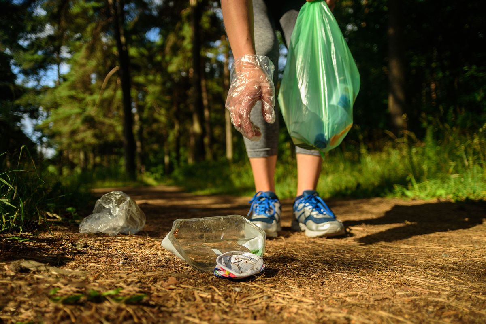

About Beskydy Mountains
Beskydy Mountains are a picturesque range in the Czech Republic, offering lush forests, rolling hills, and cultural landmarks like Radhošť and Pustevny. Popular for hiking, biking, and skiing, they feature scenic trails, folklore traditions, and diverse flora and fauna, making them a year-round outdoor paradise.

With respect to nature
The Beskydy Mountains are a treasure trove of natural beauty and biodiversity. As a protected landscape area, they house rare flora and fauna. Visitors are encouraged to follow eco-friendly practices, respect wildlife, and leave no trace, ensuring this pristine environment remains untouched for future generations.
Use recycling bins available

Don’t throw garbage in nature
Stick to marked Trails
Observe animals from a distance